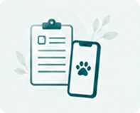

Guía completa
Consulta los pasos para usar cada sección de la plataforma.
 1
1
Cómo reportar un caso
Entra a la sección “Reportar”
Desde el menú principal o usando el botón superior.
Completa el formulario
Proporciona la mayor cantidad de información y evidencia posible.
Revisa y envía tu reporte
Verifica los datos ingresados y confirma el envío.

2
Seguimiento de reportes
Ingresa a “Mis reportes” para revisar el estado de cada caso. Desde ahí puedes abrir el detalle, revisar avances y ver la respuesta de la entidad encargada.
3
Uso del directorio
Usa el directorio para encontrar refugios, veterinarias, municipalidades u organizaciones de apoyo. Puedes revisar su información y medios de contacto.
4
Adopciones y solicitudes
En la sección Adopciones puedes ver mascotas disponibles, revisar su detalle, enviar una solicitud y consultar el estado desde “Mis solicitudes”.